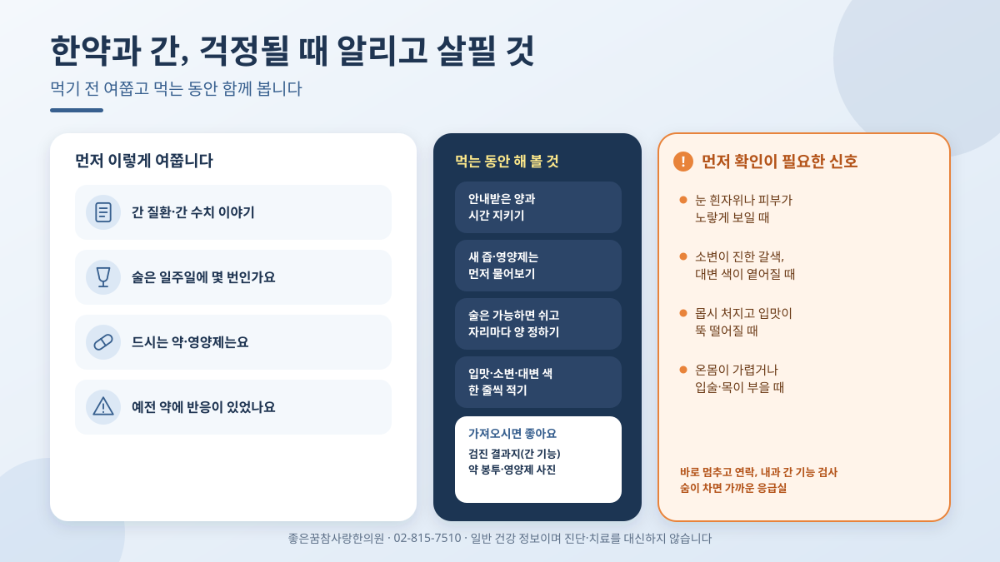

이종호 한의사 감수좋은꿈참사랑한의원 대표원장 (한의사 면허번호 19769)발행 2026-11-27 · 수정 2026-11-27
이 글의 차례
명절에 가족이 모인 자리에서 요즘 기운이 없어 한약을 지어 볼까 한다고 말을 꺼냈어요. 그러자 한쪽에서 바로 말이 돌아옵니다. "한약 먹으면 간 나빠진대." 다른 쪽에서는 몸에 맞으면 괜찮다더라 하고요. 집에 돌아와 휴대폰으로 찾아보면 어떤 글은 안심하라 하고, 어떤 글은 겁을 줍니다. 결국 예약 버튼 앞에서 손이 멈추죠.
진료실에서 이런 말씀을 자주 들어요. "원장님, 솔직히 간 걱정이 돼서요." 조심스럽게 꺼내시지만, 사실 아주 당연한 질문이에요. 피곤해서, 잠을 못 자서, 몸이 예전 같지 않아서 도움을 받고 싶은데, 그 도움이 또 다른 걱정을 낳는다면 망설여지는 게 맞죠.
그 고민을 혼자 오래 붙들고 계셨을 걸 생각하면, 이렇게 먼저 물어 주시는 게 저는 오히려 반가워요.
제 대답은 이래요. 한약도 약이에요. 드시면 몸에서 처리되는 과정을 거치고, 양약이나 영양제처럼 드물게 몸에 맞지 않는 반응이 생길 수 있어요. 그러니까 사실은 '한약은 간에 나쁘다'는 말과 '어떤 약이든 몸에 안 맞을 수 있다'는 말은 다른 얘기거든요. 앞의 말은 겁을 주고, 뒤의 말은 무엇을 살피면 되는지 알려 주죠.
그래서 저는 괜찮다는 말로 걱정을 덮기보다, 처방 전에 간 상태와 드시는 약을 먼저 여쭙고, 드시는 동안 몸이 보내는 신호를 함께 살피는 쪽을 택해요. 무엇을 알려 주시면 되는지, 무엇을 지켜보시면 되는지 하나씩 말씀드릴게요.
왜 간 걱정이 생기고, 무엇을 먼저 볼까요
우리가 먹는 약은 대부분 간을 거쳐 처리됩니다. 해열진통제든 혈압약이든 영양제든, 그리고 한약이든 마찬가지입니다. 대부분은 별일 없이 지나가지만, 드물게 어떤 성분이 그 사람의 몸과 맞지 않아 간에 부담이 생기는 경우가 있다고 알려져 있습니다. 이런 반응은 미리 정확히 내다보기 어렵습니다.
그래서 위험을 키우는 조건을 먼저 줄이고, 생기면 일찍 알아차리는 것이 현실적인 방법입니다.
위험을 키우는 조건은 비교적 분명합니다. 이미 간 질환이 있거나 검진에서 간 수치가 높다는 말을 들은 경우, 술을 자주 많이 마시는 경우, 여러 가지 약과 건강식품을 한꺼번에 먹는 경우, 예전에 약을 먹고 눈이 노래지거나 심하게 가려웠던 경우입니다. 성분과 양을 알기 어려운 즙이나 달임물을 여러 가지 겹쳐 드시는 것도 간이 처리해야 할 몫을 늘립니다.
저는 이런 이야기를 처방 전에 빠짐없이 여쭙습니다. 해열진통제를 자주 드시는 분, 특히 술을 마신 날 진통제를 찾는 습관이 있는 분도 꼭 말씀해 주세요. 진통제와 술을 함께 먹으면 위와 간에 부담이 될 수 있습니다.
주변에서 한약을 먹고 간이 나빠졌다는 이야기를 들으셨다면, 그 이야기 안에는 여러 사정이 섞여 있을 수 있습니다. 한약이 몸에 맞지 않았던 경우도 있을 테고, 같은 시기에 먹던 다른 약이나 술, 성분을 알기 어려운 제품이 함께 있었던 경우도 있을 겁니다. 어느 쪽이었는지 지금 와서 가리기는 어렵습니다. 다만 어느 쪽이든 제가 할 일은 같습니다.
미리 여쭙고, 드시는 동안 함께 지켜보는 것입니다.
검진 결과지도 귀한 단서가 됩니다. 결과지의 간 기능 항목, 흔히 AST, ALT, 감마지티피라고 적힌 칸을 보면 지금 간이 어떤 상태인지 가늠할 수 있습니다. 지난해와 올해 결과를 나란히 놓으면 수치가 꾸준히 오르는 중인지, 그해만 잠깐 높았는지도 보입니다. 숫자가 높다고 들으셨다면 한약 상담보다 내과에서 원인을 확인하는 일이 먼저입니다.
그 결과를 가져오시면 그 내용을 바탕으로 신중하게 상담합니다.
간과 함께 콩팥 상태도 여쭙습니다. 콩팥 기능이 떨어져 있으면 약 성분이 몸 밖으로 빠져나가는 데 시간이 더 걸릴 수 있어서입니다. 결과지의 크레아티닌이나 사구체여과율 칸에 표시가 있었다면 그것도 함께 보여 주세요. 그리고 한약을 드시는 중에 간 수치를 확인하게 된다면, 검사 전날의 과음이나 무리한 운동은 피해 주세요.
둘 다 수치를 잠시 올려 결과를 읽기 어렵게 만들 수 있습니다.
이런 분들을 자주 뵙습니다
연말이면 술자리가 이어지는 직장인분들이 피곤함 때문에 오셨다가 간 이야기를 꺼내십니다. 검진에서 지방간이 있다는 말을 들었고 간 수치도 경계라는데, 한약을 먹어도 되느냐고요. 저는 먼저 결과지를 함께 보고, 내과에서 재검이나 진료를 권받았다면 그것부터 받으시도록 말씀드립니다. 그리고 한 주에 술자리가 몇 번인지, 잠은 몇 시에 드는지를 정리해 봅니다.
술을 그대로 둔 채 피로만 덜어 보려는 계획은 몸에도, 간에도 무리가 될 수 있습니다.
B형 간염 보유자로 내과에서 정기 검사를 받는 분들도 계십니다. 이런 분께는 마지막 검사 결과와 담당 내과 선생님이 하신 말씀을 여쭙고, 드시는 약이 있다면 약 이름을 정확히 알려 주십사 부탁드립니다. 한약을 드시게 된다면 그 사실을 다음 내과 진료 때도 꼭 말씀하시도록 권합니다. 두 곳이 서로의 사정을 알고 있을 때 가장 안전합니다.
혈압약, 고지혈증약, 관절약에 영양제까지 하루에 알약을 한 움큼씩 드시는 어르신들도 자주 뵙습니다. 어떤 약을 왜 드시는지 본인도 헷갈려하시는 경우가 많지요. 이럴 때 저는 약 봉투와 영양제 통을 그대로 가방에 담아 오시라고 말씀드립니다. 하나하나 펼쳐 보면 비슷한 성분의 영양제를 두세 가지 겹쳐 드시는 경우가 의외로 많습니다.
영양제는 함께 정리하고, 처방약은 처방한 의사와 상의하시도록 한 뒤, 그 정리를 바탕으로 한약을 정합니다.
예전에 한약을 먹고 속이 쓰리거나 설사를 했던 기억 때문에 망설이는 분들도 계십니다. 그때 처방이 무엇이었는지 모르셔도 괜찮습니다. 언제쯤, 무엇 때문에 드셨는지, 몸이 어떻게 불편했는지만 기억나는 대로 말씀해 주시면 처방을 정할 때 참고합니다.
가족의 걱정 때문에 오시는 분들도 있습니다. 본인은 한약을 먹어 보고 싶은데 배우자나 자녀가 간 때문에 말린다는 것이지요. 그럴 때는 가족과 함께 오셔도 좋습니다. 무엇을 확인하고 무엇을 지켜볼지 같이 들으시면, 막연한 걱정이 구체적인 약속으로 바뀌는 경우가 많습니다.
임신을 준비 중이거나 수유 중인 분들도 한약을 드셔도 되는지 물으십니다. 이때는 간뿐 아니라 약재 하나하나의 안전성을 따로 살펴야 해서, 임신 가능성과 수유 여부를 처음부터 알려 주셔야 합니다. 말씀하기 망설여지는 이야기일수록 먼저 꺼내 주시는 편이 서로에게 편합니다.
먹기 전과 먹는 동안 해 두실 일
먹기 전에는 세 가지를 챙겨 주세요. 최근 1~2년의 건강검진 결과지, 지금 드시는 약과 영양제·건강식품 목록, 그리고 평소 술을 마시는 횟수와 양입니다. 목록을 적기 번거로우면 약 봉투와 영양제 통을 사진으로 찍어 오셔도 됩니다. 예전에 한약이나 다른 약을 먹고 가렵거나 눈이 노래졌던 적이 있다면 그 일도 꼭 말씀해 주세요.
가까운 시일에 건강검진이나 수술, 내시경 일정이 잡혀 있다면 그것도 함께 알려 주시고요.
드시는 동안에는 안내받은 양과 시간을 지켜 주세요. 빨리 기운을 차리고 싶은 마음에 양을 늘리거나, 좋다는 즙과 영양제를 새로 더하는 일은 피해 주십시오. 이 기간에 새로 시작하고 싶은 건강식품이 있다면 먼저 물어봐 주시면 됩니다. 술은 가능하면 쉬고, 피할 수 없는 자리라면 마실 양을 미리 정해 두세요.
연말처럼 술자리가 몰린 주가 눈앞에 있다면, 복용 시작을 그 주가 지난 뒤로 미루는 것도 방법입니다.
양약을 함께 드신다면 보통 시간 간격을 두고 드시도록 안내합니다. 간 걱정 때문에 양을 반으로 줄이거나 하루씩 걸러 드시고 싶어지는 분도 계신데, 그럴 때는 혼자 정하지 마시고 먼저 말씀해 주세요. 양과 시간은 몸 상태에 맞춰 정한 것이라, 바꿀 때도 함께 조정하는 편이 안전합니다.
다른 병원에서 진료를 받거나 새 약을 처방받을 때도 한약을 드시는 중이라고 꼭 말씀해 주세요. 무슨 약이냐는 질문을 받으면 한의원 이름과 복용을 시작한 날, 하루 몇 번 드시는지를 알려 주시면 됩니다. 서로의 사정을 아는 것만으로도 겹치는 약을 줄이는 데 도움이 됩니다.
하루를 마치며 한두 줄만 적어 두셔도 좋습니다. 입맛은 어땠는지, 유난히 처지지는 않았는지, 소변 색과 대변 색은 평소와 같은지, 몸이 가렵지는 않은지. 거창한 일지가 아니어도 됩니다. 이 짧은 기록이 15일쯤 뒤 다시 뵐 때 이어 갈지, 조정할지를 정하는 바탕이 됩니다.
다시 뵈면 저는 그 기록을 함께 넘겨 보며, 처음에 말씀드린 신호가 한 번이라도 있었는지부터 확인합니다.
스스로 점검해 볼 질문도 몇 가지 드릴게요. 검진에서 간 수치나 지방간 이야기를 들은 적이 있나요? 일주일에 술 마시는 날이 사흘을 넘나요? 지금 먹는 약과 영양제를 합치면 다섯 가지가 넘나요? 예전에 약을 먹고 가려움이나 황달을 겪은 적이 있나요? 하나라도 해당한다면 접수할 때부터 말씀해 주세요. 그만큼 더 꼼꼼히 여쭙고 살피겠습니다.
얼마나 지켜보고, 언제 진료를 받을까요
한약을 드시는 동안 처음 며칠 속이 조금 더부룩하거나 대변이 묽어지는 정도의 변화가 생기기도 합니다. 이런 가벼운 변화는 연락해서 복용 시간이나 양을 조정할지 여쭤봐 주시면 됩니다. 그리고 15일 정도마다 다시 뵙고 그사이의 기록을 함께 보며 다음을 정합니다.
간 수치가 걱정되는 분이라면, 복용을 시작한 뒤 내과 정기 검사나 건강검진 때 간 기능을 함께 확인해 보시는 것도 방법입니다.
다음과 같은 신호가 보이면 한약을 바로 멈추고 한의원에 연락하신 뒤, 내과에서 간 기능 검사를 받으세요.
- 눈 흰자위나 피부가 노랗게 보이는 경우
- 소변이 진한 갈색으로 나오거나, 대변 색이 회색빛으로 옅어진 경우
- 이유 없이 몸이 몹시 처지고 입맛이 뚝 떨어지며 메스꺼움이 이어지는 경우
- 오른쪽 윗배가 묵직하거나 아픈 경우
- 온몸이 가렵거나 두드러기가 돋고, 입술이나 목이 붓는 경우
이런 신호 때문에 복용을 멈췄다면, 며칠 사이 증상이 가라앉는 것처럼 보여도 내과 검사는 받아 보시길 권합니다. 숨이 차거나 입술과 목이 부어오른다면 지체하지 말고 가까운 응급실로 가세요. 복용 중인 양약은 처방한 의사와 상의 없이 줄이거나 끊지 않습니다.
좋은꿈참사랑한의원에 처음 오시면
처음 오시면 어떤 불편 때문에 한약을 생각하게 되셨는지부터 여쭙고, 잠과 소화, 체온, 대소변, 하루 생활을 차례로 듣습니다. 간 질환이나 간 수치 이야기를 들은 적이 있는지, 술은 어떻게 드시는지, 드시는 약과 영양제는 무엇인지, 예전에 한약을 드셔 본 적이 있다면 그때 몸은 어땠는지도 함께 정리합니다.
그다음 맥을 짚습니다. 양쪽 손목에서 맥이 손끝에 닿는 모습과 힘을 살피고, 혀를 보며, 필요하다고 판단되면 배도 살핍니다. 검진 결과지를 가져오셨다면 간 기능 항목을 함께 봅니다. 원내에서 혈액 검사를 하는 경우도 있지만, 어떤 항목을 볼 수 있는지는 상황마다 달라 방문 전 전화로 확인해 주세요.
간 기능을 더 자세히 보아야 할 때는 내과 진료를 먼저 권하고, 그런 상황이라면 한약은 그 뒤로 미루는 편이 맞습니다. 그래서 첫날 바로 처방을 정하지 않고, 검사 결과를 보고 다시 이야기하자고 말씀드리는 때도 있습니다. 조금 돌아가는 것 같아도, 지금 간 상태를 알고 시작하면 드시는 동안 훨씬 마음이 놓입니다.
처방을 정하면 드시는 양과 시간, 보관하는 법, 지켜보실 신호를 함께 말씀드립니다. 한약 비용과 처방 기간은 상태에 따라 달라 방문 전 전화로 확인해 주세요. 다시 오시면 그사이 적어 두신 기록을 펼쳐 놓고, 입맛과 잠, 소변과 대변이 어땠는지부터 이어서 여쭙습니다.
마치며
몸이 힘들어 도움을 구하려는데 그 도움이 걱정스럽다면, 그 걱정부터 꺼내 놓고 시작하는 게 맞아요. 묻는다고 까다로운 분이 되는 게 아니에요. 오히려 그렇게 물어 주시는 분과 함께할 때 저도 더 꼼꼼해질 수 있거든요.
처방을 고르고 드시는 동안의 변화를 살피는 건 제가 맡을게요. 대신 하나만 부탁드려요. 한약을 드시는 동안엔 술을 드시지 말아 주세요. 딴 건 하시던 대로 편하게 지내셔도 돼요.
오늘은 집에 있는 약 봉투와 영양제 통을 한곳에 모아 사진 한 장만 찍어 두세요. 서랍 속 검진 결과지도 찾아 두시고요. 다음에 오시면 그 사진과 결과지부터 함께 펼쳐 놓고, 무엇을 지켜보면 좋을지 얘기 나눌게요. 궁금한 건 그냥 편하게 물어보세요.
함께 읽으면 좋은 글
- 건강검진에서 간수치가 높게 나왔다고 했을 때 생활에서는 무엇을 살피나요?
- 혈압약이나 당뇨약을 먹고 있는데 한약을 함께 먹어도 되는지 어떻게 확인하나요?
- 한약을 먹는 동안 어떤 변화를 기록하고 언제 연락해야 하나요?

왜 간 걱정이 생기고, 무엇을 먼저 볼까요
- 우리가 먹는 약은 대부분 간을 거쳐 처리됩니다.
- 해열진통제든 혈압약이든 영양제든, 그리고 한약이든 마찬가지입니다.
이런 분들을 자주 뵙습니다
- 연말이면 술자리가 이어지는 직장인분들이 피곤함 때문에 오셨다가 간 이야기를 꺼내십니다.
- 검진에서 지방간이 있다는 말을 들었고 간 수치도 경계라는데, 한약을 먹어도 되느냐고요.
먹기 전과 먹는 동안 해 두실 일
- 먹기 전에는 세 가지를 챙겨 주세요.
- 최근 1~2년의 건강검진 결과지, 지금 드시는 약과 영양제·건강식품 목록, 그리고…
얼마나 지켜보고, 언제 진료를 받을까요
- 눈 흰자위나 피부가 노랗게 보이는 경우
- 소변이 진한 갈색으로 나오거나, 대변 색이 회색빛으로 옅어진 경우
자주 묻는 질문
한약은 간에 전혀 부담이 없나요?
한약도 약이라 몸에서 처리되는 과정을 거치고, 드물게 맞지 않는 반응이 생길 수 있습니다. 그래서 처방 전에 간 상태와 드시는 약을 여쭙고, 복용 중 몸의 변화를 함께 살핍니다.
간 수치가 경계라고 들었는데 한약을 먹어도 되나요?
내과에서 원인을 먼저 확인하시는 것이 우선입니다. 결과지와 드시는 약을 가져오시면 그 내용을 바탕으로 신중하게 상담합니다.
간에 좋다는 영양제를 한약과 함께 먹어도 되나요?
여러 제품을 겹쳐 드시면 오히려 간이 처리할 몫이 늘 수 있습니다. 드시는 제품을 모두 보여 주시면 함께 정리합니다.
한약을 먹는 중에 건강검진을 받게 됐어요.
검진 기관에 한약을 드시는 중이라고 알려 주시고, 결과지를 다음 진료 때 가져와 주세요. 검진 날짜를 미리 말씀해 주시면 복용 일정을 함께 맞춥니다.
약재는 어떻게 관리하고 어디에서 달이나요?
원내에서 달이며, 대표원장이 약재를 검수합니다. 복용법과 보관법도 함께 안내해 드립니다.
좋은꿈참사랑한의원은 재진 때 지난번 이야기부터 이어서 여쭙니다. 진료시간과 예약은 오시는 길에서 확인하세요.
어디서 상담받을 수 있나요?
좋은꿈참사랑한의원은 서울 동작구 만양로2길 2 신성빌딩 3층·5층(서울 동작구 상도동, 7호선 상도역 3번 출구 근처)에 있습니다. 한의사 3명(이종호 대표원장, 조영기 수석진료원장, 정원영 진료원장)이 진료합니다. 진료시간은 평일 09:30~20:00(점심 13:00~14:00), 토·일·공휴일 09:30~15:00이며, 방문 전 전화로 확인을 권합니다. 예약은 네이버 예약, 카카오톡 상담, 전화 02-815-7510로 받습니다.
이 글은 일반적인 건강 정보이며 개인의 진단이나 치료를 대신하지 않습니다. 증상이 있거나 복용 중인 약이 있다면 진료를 통해 확인하세요. 치료 효과는 개인마다 다를 수 있습니다.
작성 기준: 일반적으로 알려져 있는 건강 정보를 참고해 정리했습니다(대표원장 감수). 증상 기록은 1~2주 동안 하루 1회, 비슷한 시간에 적어 오시면 지난 상태와 비교하기 쉽습니다.